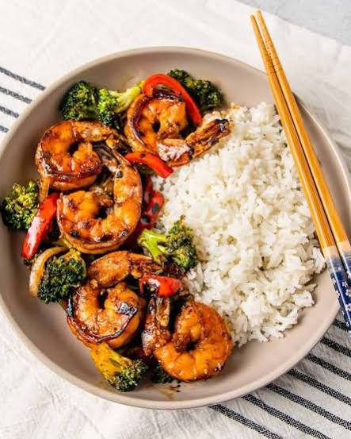

Honey Garlic Glazed Shrimp Stir-Fry

A sweet, savory, and incredibly fast meal that is perfect for busy nights.
Crisp vegetables and tender shrimp are tossed in a glossy, flavorful glaze
that pairs perfectly over a bowl of steaming rice
Ingredients
- Shrimp
- Vegetables
- Oil
- Glaze
- Thickener
-
Whisk the sauce:In a small bowl, whisk together the
honey, soy sauce, minced garlic, and grated ginger. Set aside.
-
Cook the shrimp:Heat the oil in a large skillet or wok
over medium-high heat. Add the shrimp in a single layer and cook for 1–2
minutes per side until pink and just opaque. Remove the shrimp and set
aside on a plate.
-
Stir-fry the vegetables: 3. Add the broccoli, bell
pepper, and carrots to the same hot skillet. Cook for 4–5 minutes,
stirring constantly, until the veggies are tender-crisp.
-
Thicken the sauce:Pour the honey-garlic sauce into the
skillet with the vegetables. Bring it to a simmer for 1 minute, then
pour in the cornstarch mixture, stirring quickly until the sauce
thickens into a glossy glaze.
-
Toss and serve:Return the cooked shrimp back into the
skillet. Toss everything together for 1 minute until the shrimp is hot
and coated in the glaze. Serve immediately over white rice or quinoa.